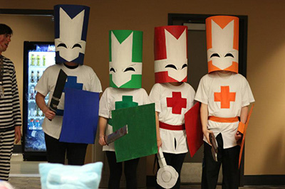

About
For the fifth time at Oregon Tech, TechCon is back and ready to game for all students of Oregon Tech. TechCon was first created in 2012. It offered a large-scale program for residents of Oregon Tech's Housing & Residence Life to experience a fun environment catered to the nerdier side of life. Since then, TechCon has attempted to grow and refine what is offered. We're excited to bring you this year's event lineup.
TechCon 2016 plans to bring even more fun and excitement than ever in the past! We've got consoles from old to new that you can play on all day long. We've got casual board and card games including Settlers of Catan, Arkham Horror, Munchkin, Betrayal At House On The Hill, and Cards Against Humanity. There's also a League of Legends tournament to watch or participate in and, of course, free food if you've got your TechBadge. Head over to the Schedule page for a full list of what we've got planned.
Board and video games not your cup 'o tea? Well that's just fine. We've got a bunch of other things to do. Throughout both days, we'll have prizes, movies, and the Red Dragon Casino. There'll also be periodic panels and activities featuring a wide variety of interests including Magic the Gathering, Minecraft, League of Legends, Cosplay, and more.
Map of Events
*Subject to change*

Frequently Asked Questions
Q: Is TechCon free?
A: Yes! TechCon is free to everyone, but we encourage you to bring non-perishable food donations for the Food Bank.
The only event that requires money are the Magic: The Gathering Khans of Tarkir Booster Draft ($8 for OIT students, $15 if not) and Fate Reforged Prerelease ($25), to be paid at the Check In Table.
Q: Where do I sign up for tournaments?
A: Beforehand, you can register online here for League and here for everything else.
At the event itself, there is an area labelled "Tournament Sign Up" near the prize table. 30 minutes before each tournament, there will be someone there signing people up for tournaments if you have not already pre-registered for the event.
Q: Where do I go to participate in my tournament?
A: If the tournament is computer-based (League or Minecraft), you will meet the Computer Tech at the tournament sign up table 15 minutes before the tournament and the Computer Tech will walk you down to the corresponding lab for that tournament.
Q: When are events? What’s happening?
A: While you're at TechCon, you can one of the many large posters with maps and schedules or take a peek at your handouts. Online, there's the Schedule Page that you can look at. The events are getting finalized, but the online page will continue to get updated.
Q: I lost something. Where might it be?
A: There will be a lost and found at the prize table. The CU Info Desk also has a lost and found table that you can check out.
Q: Do I need to check in both days?
A: If you want food, then yes! You will only receive food vouchers (for lunch and dinner) for the days you check in. So if you want food both Saturday and Sunday, you must check in both days at the check in table or prize table.
Q: You guys are dumb and didn't answer my question here. Who can I talk to about _______?
A: Please contact us and we'll get your questions sorted out.
Gallery
-
Console tournaments and causal gaming all day -
Play your favorite board & card games -
Show off at our costume contest -
Get lucky at the Red Dragon Casino -

Don't forget to bring all your friends -
Participate to earn TechChips to trade in for prizes -
Fun for all ages -
Sign up for the 2016 League Tournament -
Guess that tune at our DJ Table for TechChips -
Join our panels to learn more about your interests